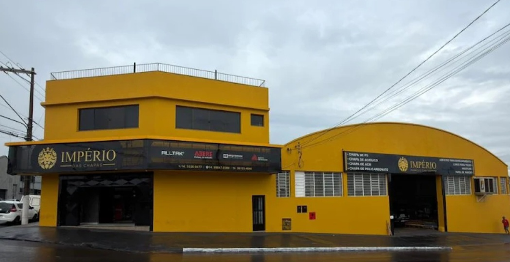
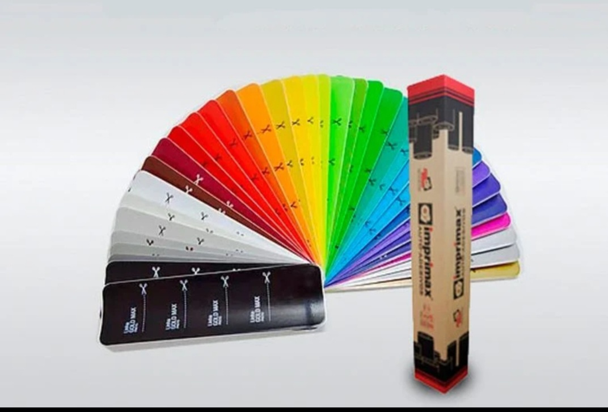
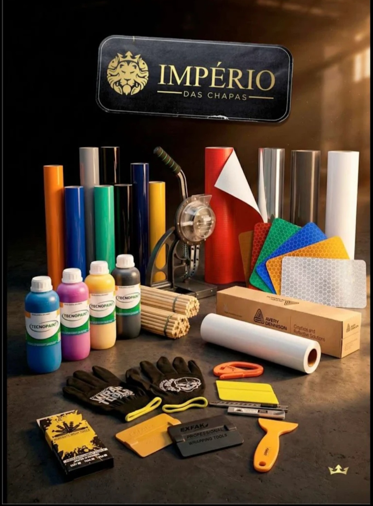
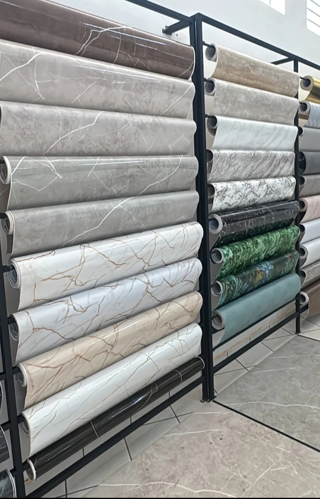
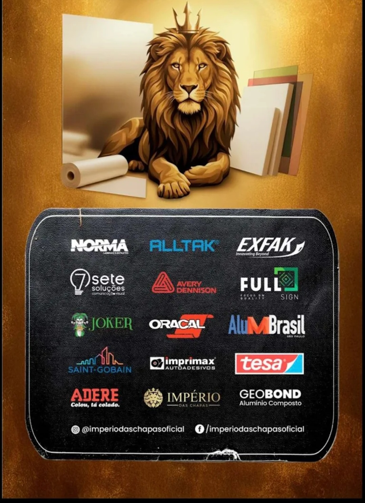

Ourinhos - SP
A Império das Chapas é referência em Ourinhos e região no fornecimento de materiais para comunicação visual, construção e projetos personalizados. Trabalha com uma ampla linha de produtos de alta qualidade, atendendo profissionais, empresas e projetos técnicos com excelência.
Especializada em materiais como ACM, PVC, PETG, Vinil, Lonas, PS, Acrílico e Policarbonato, além de tintas de alto desempenho das marcas Jetbest e Tecnopaint.
Atendimento ágil, variedade de produtos e compromisso com qualidade fazem da Império das Chapas uma parceira ideal para quem busca soluções profissionais e duráveis.
Endereço: Rua dos Expedicionários, 1111
Falar no WhatsApp Ligar


